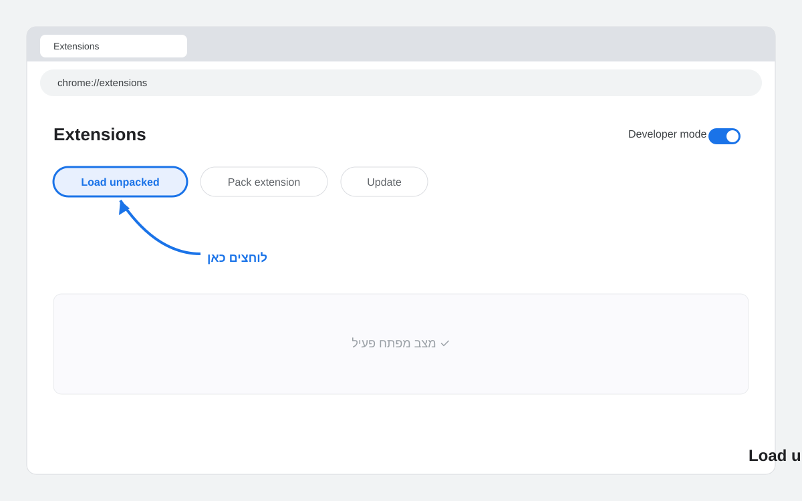
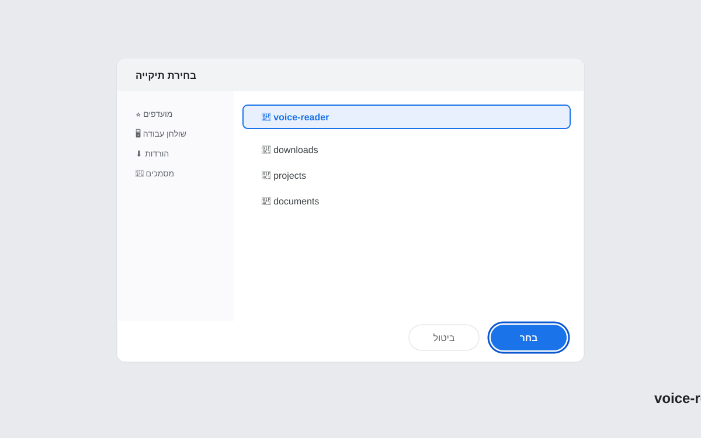

How to Install an Unpacked Chrome Extension in Developer Mode
You found an extension you want to try — Voice Reader, a side project, something from GitHub — but it's not on the Chrome Web Store. The store is not the only way in. Chrome lets you load an extension directly from a local folder, and it takes about two minutes.
This guide walks through every step for Chrome, then covers the same flow for Edge, Brave, and Opera. It also lists the errors you are most likely to hit and how to fix them.
What "Unpacked" Actually Means
A Chrome extension is just a folder of files: HTML, JavaScript, icons, and a manifest.json that describes what the extension does. When you install from the Web Store, Chrome downloads a .crx file — a zipped, signed package. "Unpacked" means you skip that package and point Chrome at the raw folder instead.
Developer mode is the gate that allows this. By default Chrome only loads extensions it trusts from the store. Toggling developer mode tells Chrome: I know what I'm doing, let me pick the folder myself.
This is how extension developers test their work before publishing. It is also the right way to install open-source extensions like Voice Reader that you download directly from a repository.
Step-by-Step: Install an Unpacked Extension in Chrome
Step 1: Download and Extract the Extension ZIP
Go to the Voice Reader GitHub repository (or whatever extension you want to install). Click Code → Download ZIP. Once the file downloads, extract it. On macOS double-click the ZIP; on Windows right-click and choose Extract All.
After extraction you will have a folder. Note where it is — you will need to point Chrome at it. Do not move or delete this folder later or the extension will stop working.
Step 2: Open Chrome Extensions
In Chrome's address bar type chrome://extensions and press Enter. You can also reach this page from the three-dot menu → Extensions → Manage Extensions.
Step 3: Enable Developer Mode
In the top-right corner of the Extensions page you will see a toggle labeled Developer mode. Switch it on.

Three new buttons appear: Load unpacked, Pack extension, and Update. You only need Load unpacked.
Step 4: Click "Load Unpacked" and Pick the Folder
Click Load unpacked. A file picker opens. Navigate to the folder you extracted in Step 1. Select the folder that contains manifest.json directly inside it — not a parent folder, not the ZIP file.

Click Select (or Open). Chrome reads the manifest and adds the extension to your browser. The Voice Reader icon appears in the toolbar within seconds.
Step 5: Pin the Extension (Optional)
Click the puzzle-piece icon in the Chrome toolbar, find Voice Reader, and click the pin icon. This keeps it visible without needing to open the extensions menu every time.
The Same Steps for Edge, Brave, and Opera
All Chromium-based browsers use the same extension architecture. The pages have different URLs but the controls look almost identical.
Microsoft Edge
Go to edge://extensions. Toggle Developer mode in the left sidebar (not the top-right — Edge puts it on the side). Click Load unpacked and pick your folder.
Brave
Go to brave://extensions. The layout mirrors Chrome exactly. Toggle Developer mode top-right, then Load unpacked.
Opera
Go to opera://extensions. Click the toggle in the top-right to enable developer mode, then click Load unpacked extension.
Voice Reader works in all four browsers. If you use a free offline TTS extension and want it on multiple browsers, repeat these steps in each one — they do not share extension installations.
Common Errors and How to Fix Them
"Manifest file is missing or unreadable" — You picked the wrong folder. Chrome expects to find manifest.json at the top level of whatever folder you selected. If your ZIP extracted to voice-reader-main/voice-reader-main/, go one level deeper. Open the folder in your file manager first and confirm manifest.json is right there before trying Load unpacked again.
Extension disappears after restarting Chrome — The folder was moved, renamed, or deleted. Unpacked extensions are loaded by path. If that path no longer exists, Chrome drops the extension on startup. Put the folder somewhere permanent — your Documents folder works well — and never rename it.
"This extension is not from the Chrome Web Store" — This warning appears as a yellow banner on the Extensions page. It is informational only. Click the X to dismiss it. It will reappear occasionally as a reminder that developer mode is on.
Extension loads but does nothing — Some extensions require permissions you have to grant after installation. Click the extension icon, look for a permissions prompt, and accept it. For Voice Reader, the extension asks to access the current tab — approve that and it will work.
How to Update an Unpacked Extension
When a new version of Voice Reader is released on GitHub, updating takes three steps:
- Download the new ZIP and extract it to a new folder (or replace the contents of the old one)
- Go to
chrome://extensions - Click the refresh icon on the Voice Reader card, or click the Update button at the top of the page
Chrome re-reads the manifest and picks up the changes. No need to remove and re-add the extension unless the folder path changed.
Why Not Just Use the Chrome Web Store?
For most users, the Web Store is simpler. But there are real reasons to go the unpacked route. The extension may not be published yet. You may want to inspect the source code before running it. Or you need a version that differs from what is live on the store.
Voice Reader is open source — every line of code is on GitHub. Loading it as an unpacked extension means you can read exactly what runs in your browser. No black box. For a privacy-focused extension that processes your text locally, that kind of transparency matters.
FAQ
Is it safe to enable developer mode in Chrome?
Yes. Turning on developer mode only lets you load local extensions — it does not open any network ports or reduce Chrome's sandbox protections. Chrome shows a warning each restart to remind you it is on. The risk, if any, comes from the extension itself, not from developer mode. Only load extensions whose source code you trust or have reviewed.
Why does my unpacked extension disappear after restarting Chrome?
Chrome loads unpacked extensions by reading the folder path you gave it. If the folder no longer exists at that path — because you moved, renamed, or deleted it — Chrome has nowhere to look and drops the extension. Store the extracted folder somewhere permanent, like ~/Documents/extensions/voice-reader, and leave it there.
What does "Manifest file is missing or unreadable" mean?
You selected the wrong folder. The folder you pass to Load unpacked must contain manifest.json at its root. A common mistake is selecting the parent folder after extracting a ZIP that creates a double-nested directory. Open the folder in Finder or Explorer, verify you can see manifest.json at the top level, then try Load unpacked again.
Does loading an unpacked extension work in Edge, Brave, and Opera?
Yes. Edge, Brave, and Opera are all Chromium-based and support the same unpacked extension mechanism. Navigate to edge://extensions, brave://extensions, or opera://extensions, enable developer mode on that page, and click Load unpacked. The steps are functionally identical to Chrome.